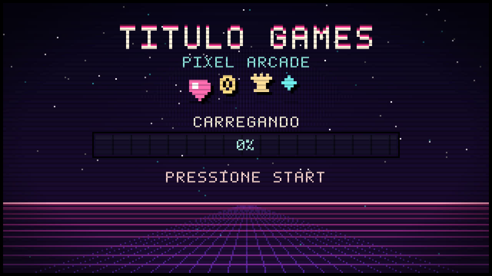

TITULO GAMES · INTRO
O vídeo virou uma animação de intro: mesmo visual, pesando pouco,
tocando em loop atrás do conteúdo e saindo de cena sozinha quando a página termina de carregar.
Recarregue esta página (Ctrl/Cmd + R) para ver de novo.
<link rel="stylesheet" href="assets/loading/loader.css">
<script src="assets/loading/loader.js"
data-src="assets/loading/loader.mp4"
data-webm="assets/loading/loader.webm"
data-poster="assets/loading/loader-poster.jpg"></script>
O loader some sozinho no window.load, segura no mínimo
data-min ms (padrão 900) e tem trava de segurança de data-max ms
(padrão 6000) — nunca deixa o site preso. Esc ou “Pular ›” fecham na hora.
python3 tools/video2loader.py SEU_VIDEO.mp4 --loop pingpong --width 1280 --gif # saida: assets/loading/loader.mp4 · loader.webm · loader-poster.jpg · loader.json
Sem FFmpeg instalado? Não precisa: ele pega o binário do
imageio-ffmpeg (pip3 install imageio-ffmpeg pillow).
O modo pingpong faz o vídeo ir e voltar, então o loop fecha
sem aquele “salto” no final.

Alvo do loader: ≤ 600 KB, 720p, 30 fps, sem áudio, preto puro, loop emendado. Acima disso o usuário espera a intro em vez de ver o site.